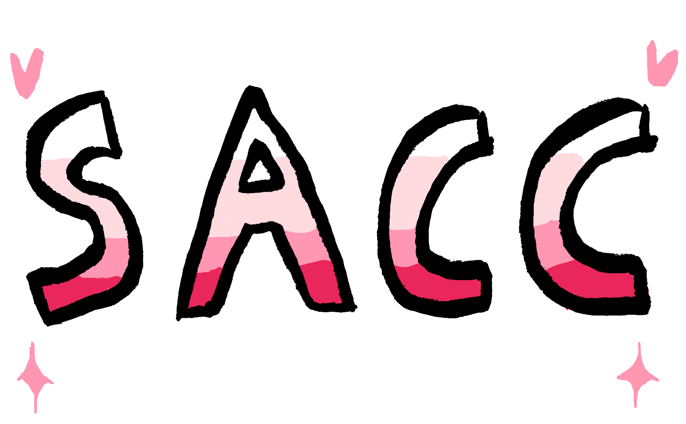

|
|
Home | Projects | Blog | About Me |
|---|

This website is a collection of all my different projects and socials, etc.
Shoutout to my high-school computer science class for teaching me HTML.
Maybe one day I'll make the design less pink!